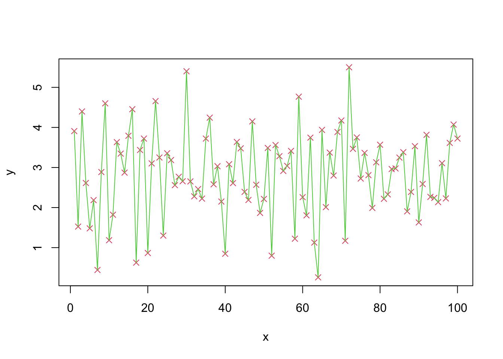
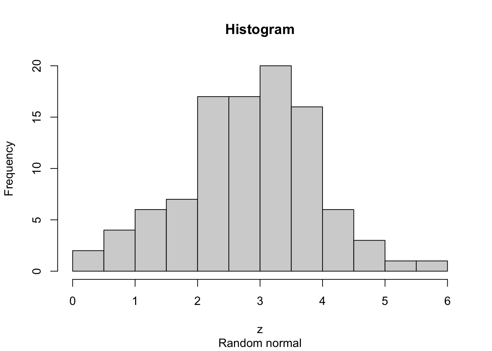
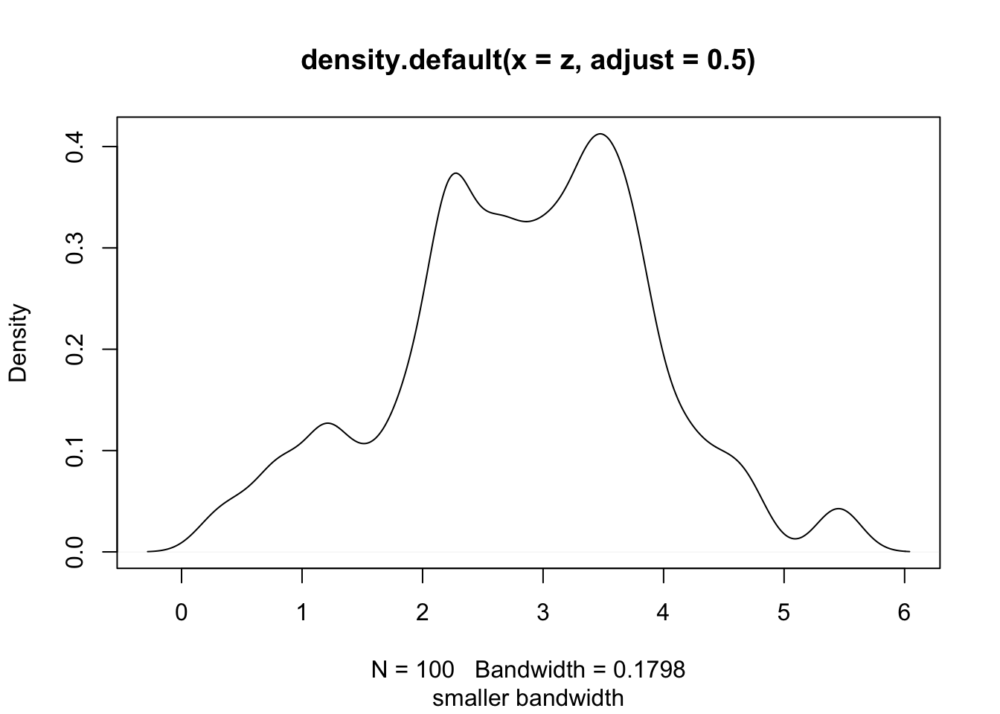

3 Plotting and Graphics
Visit these sites for some ideas.
- http://www.sr.bham.ac.uk/~ajrs/R/r-gallery.html
- http://gallery.r-enthusiasts.com/
- http://cran.r-project.org/web/views/Graphics.html
3.1 Base R graphics
The command plot(x,y) will plot vector x as the independent variable and vector y as the dependent variable. Within the command line, you can specify the title of the graph, the name of the x-axis, and the name of the y-axis. - main=’title’ - xlab=’name of x axis’ - ylab=’name of y axis’
The command lines(x,y) adds a line segment to an existing plot. The command points(x,y) adds points to the plot. A legend can be created using legend, though getting the legend right for base graphics can be a bit challenging. To get a basic idea of what R offers, it has a build-in demo that can be run with demo(graphics).
Try this yourself:
x = 1:100
y = rnorm(100,3,1) # 100 random normal deviates with mean=3, sd=1
plot(x,y)
plot(x,y,main='My First Plot')
# change point type
plot(x,y,pch=3)
# change color
plot(x,y,pch=4,col=2)
# draw lines between points
lines(x,y,col=3)
z=sort(y)
# plot a sorted variable vs x
plot(x,z,main='Random Normal Numbers',
xlab='Index',ylab='Random Number')
# A basic histogram
hist(z, main="Histogram",
sub="Random normal")
# A "density" plot
plot(density(z), main="Density plot",
sub="Random normal")
# A smaller "bandwidth" to capture more detail
plot(density(z, adjust=0.5),
sub="smaller bandwidth")
3.2 Plotting with ggplot2
The ggplot2 package is a relatively novel approach to generating highly informative publication-quality graphics. The “gg” stands for “Grammar of Graphics”. In short, instead of thinking about a single function that produces a plot, ggplot2 uses a “grammar” approach, akin to building more and more complex sentences to layer on more information or nuance. See the ggplot2 graphics gallery for some examples with accompanying code.
The ggplot2 package assumes that data are in the form of a data.frame. In some cases, the data will need to be manipulated into a form that matches assumptions that ggplot2 uses. In particular, if one has a matrix of numbers associated with different subjects (samples, people, etc.), the data will usually need to be transformed into a “long” data frame.
To use the ggplot2 package, it must be installed and loaded. Assuming that installation has been done already, we can load the package directly:
library(ggplot2)3.2.1 mtcars data
We are going to use the mtcars dataset, included with R, to experiment with ggplot2.
data(mtcars)- Exercise: Explore the
mtcarsdataset usingView,summary,dim,class, etc.
We can also take a quick look at the relationships between the variables using the pairs plotting function.
pairs(mtcars)That is a useful view of the data. We want to use ggplot2 to make an informative plot, so let’s approach this in a piecewise fashion. We first need to decide what type of plot to produce and what our basic variables will be. In this case, we have a number of choices.
ggplot(mtcars,aes(x=disp,y=hp))First, a little explanation is necessary. The ggplot function takes as its first argument a data.frame. The second argument is the “aesthetic”, aes. The x and y take column names from the mtcars data.frame and will form the basis of our scatter plot.
But why did we get that “Error: No layers in plot”? Remember that ggplot2 is a “grammar of graphics”. We supplied a subject, but no verb (called a layer by ggplot2). So, to generate a plot, we need to supply a verb. There are many possibilities. Each “verb” or layer typically starts with “geom” and then a descriptor. An example is necessary.
ggplot(mtcars,aes(x=disp,y=hp)) + geom_point()We finally produced a plot. The power of ggplot2, though, is the ability to make very rich plots by adding “grammar” to the “plot sentence”. We have a number of other variables in our mtcars data.frame. How can we add another value to a two-dimensional plot?
ggplot(mtcars,aes(x=disp,y=hp,color=cyl)) + geom_point()The color of the points is a based on the numeric variable wt, the weight of the car. Can we do more? We can change the size of the points, also.
ggplot(mtcars,aes(x=disp,y=hp,color=wt,size=mpg)) + geom_point()So, on our 2D plot, we are now plotting four variables. Can we do more? We can manipulate the shape of the points in addition to the color and the size.
ggplot(mtcars,aes(x=disp,y=hp)) + geom_point(aes(size=mpg,color=wt,shape=cyl))Why did we get that error? Ggplot2 is trying to be helpful by telling us that a “continuous varialbe cannot be mapped to ‘shape’”. Well, in our mtcars data.frame, we can look at cyl in detail.
class(mtcars$cyl)## [1] "numeric"summary(mtcars$cyl)## Min. 1st Qu. Median Mean 3rd Qu. Max.
## 4.000 4.000 6.000 6.188 8.000 8.000table(mtcars$cyl)##
## 4 6 8
## 11 7 14The cyl variable is “kinda” continuous in that it is numeric, but it could also be thought of as a “category” of engines. R has a specific data type for “category” data, called a factor. We can easily convert the cyl column to a factor like so:
mtcars$cyl = as.factor(mtcars$cyl)Now, we can go ahead with our previous approach to make a 2-dimensional plot that displays the relationships between five variables.
ggplot(mtcars,aes(x=disp,y=hp)) + geom_point(aes(size=mpg,color=wt,shape=cyl))- Additional exercises
- Use
geom_textto add labels to your plot. - Convert all your work to plotly for interactive versions of the plots.
- Use
3.2.2 NYC Flight data
I leave this section open-ended for you to explore further options with the ggplot2 package. The data represent the on-time data for all flights that departed New York City in 2013.
# install.packages('nycflights13')
library(nycflights13)
data(flights)
head(flights)## # A tibble: 6 x 19
## year month day dep_time sched_dep_time dep_delay arr_time
## <int> <int> <int> <int> <int> <dbl> <int>
## 1 2013 1 1 517 515 2 830
## 2 2013 1 1 533 529 4 850
## 3 2013 1 1 542 540 2 923
## 4 2013 1 1 544 545 -1 1004
## 5 2013 1 1 554 600 -6 812
## 6 2013 1 1 554 558 -4 740
## # ... with 12 more variables: sched_arr_time <int>, arr_delay <dbl>,
## # carrier <chr>, flight <int>, tailnum <chr>, origin <chr>, dest <chr>,
## # air_time <dbl>, distance <dbl>, hour <dbl>, minute <dbl>,
## # time_hour <dttm>Use ggplot and other plotting tools to explore the data and look for features that might contribute to airport delays. Consider using other “geoms” during your exploration.
3.3 Graphics Devices and Saving Plots
To make a plot directly to a file use: png(), postscript(), etc.
png(file="myplot.png",width=480,height=480)
plot(density(z,adjust=2.0),sub="larger bandwidth")
dev.off()## quartz_off_screen
## 2On your own, save a pdf to a file. NOTE: The dimensions in pdf() are in inches.
To put multiple plots on a page, we can set the mfrow graphics parameter.
par(mfrow=c(2,1))
plot(density(z,adjust=2.0),sub="larger bandwidth")
hist(z)
# use dev.off() to turn off the two-row plottingR can have multiple graphics “devices” open.
- To see a list of active devices:
dev.list() - To close the most recent device:
dev.off() - To close device 5:
dev.off(5) - To use device 5:
dev.set(5)